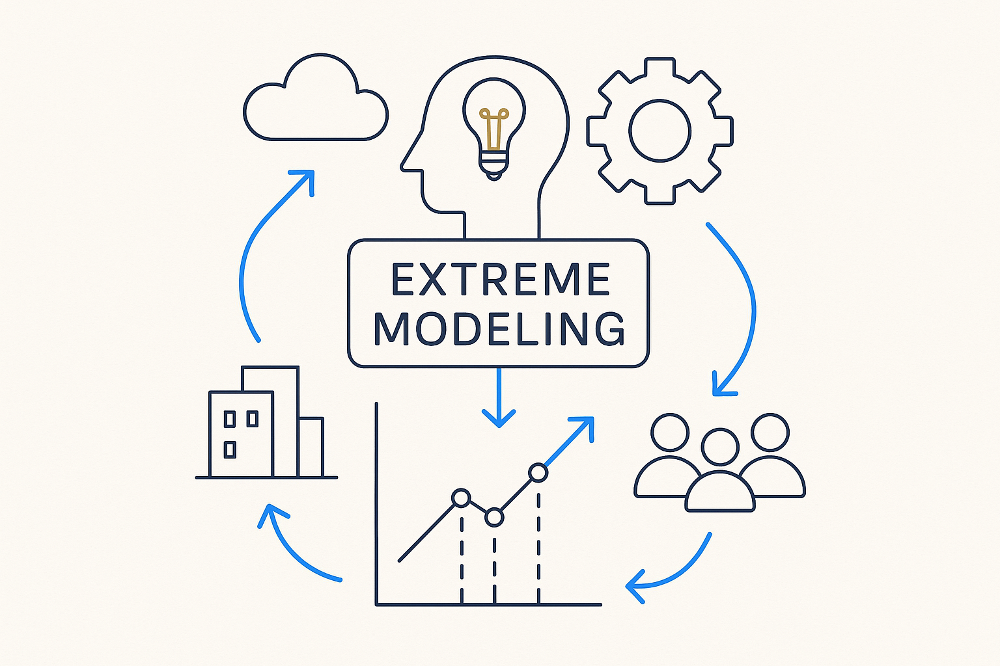

Breakthrough Modeling under real, concurrent complexity — AKA Extreme Modeling: planmatig, structured, intelligent and focused enough to hold migrations, mergers, platform shifts and volatile teams all at once.

> Breakthrough Modeling under real, concurrent complexity — AKA Extreme Modeling: planmatig, structured, intelligent and focused enough to hold migrations, mergers, platform shifts and volatile teams all at once.
Extreme Modeling is Breakthrough Modeling with the volume turned up to where the work actually lives. The demo version is tidy; the real version runs while new sources arrive, sources change, companies merge, platforms shift under sovereignty rules, teams churn across offshore and near-shore, and the methodology itself is moving toward mesh and data products. Modeling under *that* — not despite it but with it fully in view — is the extreme in the name.
It demands a new way of working: planmatig, structured, intelligent, focused and dedicated. Not heroics, and not ad-hoc firefighting, but a disciplined system that can absorb concurrent change without losing the thread. That is why the attitude concepts matter as much as the modeling ones — extreme modeling is impossible without ownership, urgency, discipline and clarity carrying the load.
Extreme Modeling is the honest AKA for the whole approach: not modeling in a vacuum, but modeling at the scale and pace the enterprise really has. Think big, own your part, check it against reality — and keep the structure intact while everything around it moves.
Where it lives: the signature principle of Breakthrough Modeling — the same method, sized for real complexity.